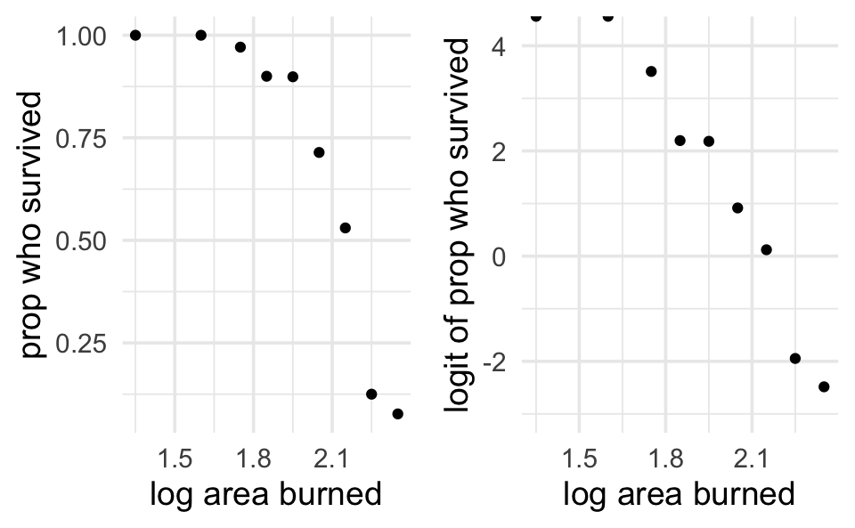
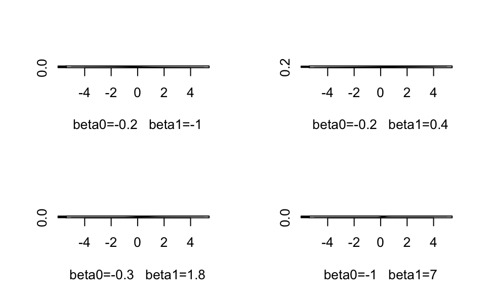
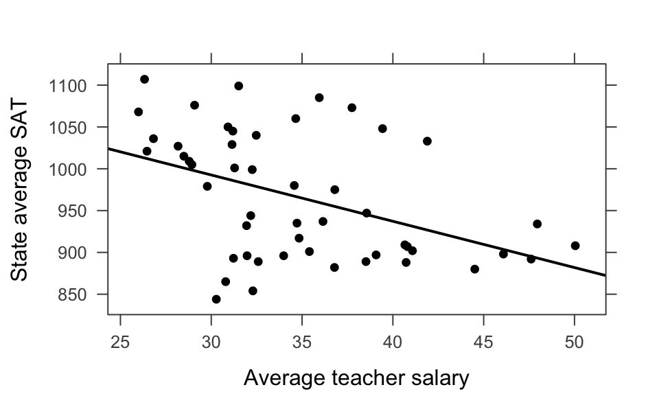
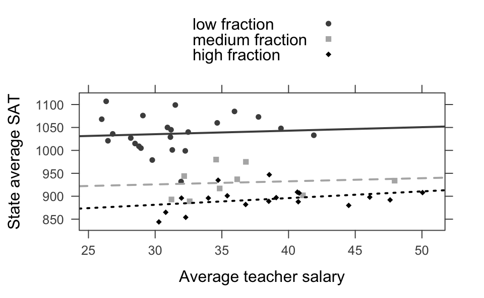
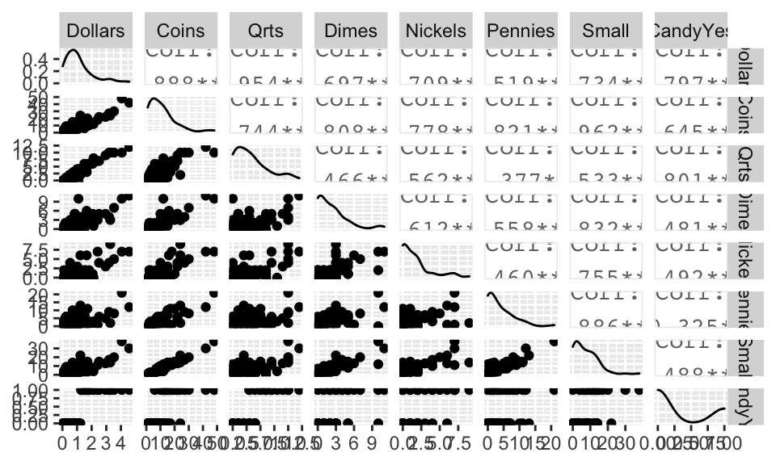

Chapter 5 Logistic Regression
5.1 Motivation for Logistic Regression
During investigation of the US space shuttle Challenger disaster, it was learned that project managers had judged the probability of mission failure to be 0.00001, whereas engineers working on the project had estimated failure probability at 0.005. The difference between these two probabilities, 0.00499 was discounted as being too small to worry about. Is a different picture provided by considering odds? How is it interpreted?
The logistic regression model is a generalized linear model. That is, a linear model as a function of the expected value of the response variable. We can now model binary response variables. \[\begin{eqnarray*} GLM: g(E[Y | X]) = \beta_0 + \beta_1 X \end{eqnarray*}\] where \(g(\cdot)\) is the link function. For logistic regression, we use the logit link function: \[\begin{eqnarray*} \logit (p) = \ln \bigg( \frac{p}{1-p} \bigg) \end{eqnarray*}\]Example 5.1 Surviving third-degree burns
These data refer to 435 adults who were treated for third-degree burns by the University of Southern California General Hospital Burn Center. The patients were grouped according to the area of third-degree burns on the body (measured in square cm). In the table below are recorded, for each midpoint of the groupings log(area +1), the number of patients in the corresponding group who survived, and the number who died from the burns. (Fan, Heckman, and Wand 1995)
| log(area+1) midpoint | survived | died | prop surv |
|---|---|---|---|
| 1.35 | 13 | 0 | 1 |
| 1.60 | 19 | 0 | 1 |
| 1.75 | 67 | 2 | 0.971 |
| 1.85 | 45 | 5 | 0.900 |
| 1.95 | 71 | 8 | 0.899 |
| 2.05 | 50 | 20 | 0.714 |
| 2.15 | 35 | 31 | 0.530 |
| 2.25 | 7 | 49 | 0.125 |
| 2.35 | 1 | 12 | 0.077 |

We can see that the logit transformation linearizes the relationship.
A first idea might be to model the relationship between the probability of success (that the patient survives) and the explanatory variable log(area +1) as a simple linear regression model. However, the scatterplot of the proportions of patients surviving a third-degree burn against the explanatory variable shows a distinct curved relationship between the two variables, rather than a linear one. It seems that a transformation of the data is in place.
Note that the functional form relating x and the probability of success looks like it could be an S shape. But we’d have to do some work to figure out what the form of that S looks like. Below I’ve given some different relationships between x and the probability of success using \(\beta_0\) and \(\beta_1\) values that are yet to be defined. Regardless, we can see that by tuning the functional relationship of the S curve, we can get a good fit to the data.

S-curves ( y = exp(linear) / (1+exp(linear)) ) for a variety of different parameter settings. Note that the x-axis is some continuous variable x while the y-axis is the probability of success at that value of x. More on this as we move through this model.
Why doesn’t linear regression work here?
- The response isn’t normal
- The response isn’t linear (until we transform)
- The predicted values go outside the bounds of (0,1)
- Note: it does work to think about values inside (0,1) as probabilities
5.1.1 The logistic model
Instead of trying to model the using linear regression, let’s say that we consider the relationship between the variable \(x\) and the probability of success to be given by the following generalized linear model. (Note that this is just one model, there isn’t anything magical about it. We do have good reasons for how we defined it, but that doesn’t mean there aren’t other good ways to model the relationship.)
\[\begin{eqnarray*} p(x) = \frac{e^{\beta_0 + \beta_1 x}}{1+e^{\beta_0 + \beta_1 x}} \end{eqnarray*}\]Where \(p(x)\) is the probability of success (here surviving a burn). \(\beta_1\) still determines the direction and slope of the line. \(\beta_0\) now determines the location (median survival).
- Note 1 What is the probability of success for a patient with covariate of \(x = -\beta_0 / \beta_1\)?
\[\begin{eqnarray*} x &=& - \beta_0 / \beta_1\\ \beta_0 + \beta_1 x &=& 0\\ e^{0} &=& 1\\ p(-\beta_0 / \beta_1) &=& p(x) = 0.5 \end{eqnarray*}\] (for a given \(\beta_1\), \(\beta_0\) determines the median survival value) - Note 2 If \(x=0\), \[\begin{eqnarray*} p(0) = \frac{e^{\beta_0}}{1+e^{\beta_0}} \end{eqnarray*}\] \(x=0\) can often be thought of as the baseline condition, and the probability at \(x=0\) takes the place of thinking about the intercept in a linear regression.
- Note 3
\[\begin{eqnarray*} 1 - p(x) = \frac{1}{1+e^{\beta_0 + \beta_1 x}} \end{eqnarray*}\] gives the probability of failure. \[\begin{eqnarray*} \frac{p(x)}{1-p(x)} = e^{\beta_0 + \beta_1 x} \end{eqnarray*}\] gives the odds of success. \[\begin{eqnarray*} \ln \bigg( \frac{p(x)}{1-p(x)} \bigg) = \beta_0 + \beta_1 x \end{eqnarray*}\]gives the \(\ln\) odds of success .
- Note 4 Every type of generalized linear model has a link function. Ours is called the logit. The link is the relationship between the response variable and the linear function in x. \[\begin{eqnarray*} \logit(\star) = \ln \bigg( \frac{\star}{1-\star} \bigg) \ \ \ \ 0 < \star < 1 \end{eqnarray*}\]
5.1.1.1 model assumptions
Just like in linear regression, our Y response is the only random component.
- independent trials
- success / failure
- probability of success is constant for a particular \(X\).
- \(E[Y|x] = p(x)\) is given by the logistic function
5.1.1.2 interpreting coefficients
Let’s say the log odds of survival for given observed (log) burn areas \(x\) and \(x+1\) are: \[\begin{eqnarray*} \logit(p(x)) &=& \beta_0 + \beta_1 x\\ \logit(p(x+1)) &=& \beta_0 + \beta_1 (x+1)\\ \beta_1 &=& \logit(p(x+1)) - \logit(p(x))\\ &=& \ln \bigg(\frac{p(x+1)}{1-p(x+1)} - \frac{p(x)}{1-p(x)} \bigg)\\ &=& \ln \bigg( \frac{p(x+1) / [1-p(x+1)]}{p(x) / [1-p(x)]} \bigg)\\ e^{\beta_1} &=& \bigg( \frac{p(x+1) / [1-p(x+1)]}{p(x) / [1-p(x)]} \bigg)\\ \end{eqnarray*}\]\(e^{\beta_1}\) is the odds ratio for dying associated with a one unit increase in x. [\(\beta_1\) is the change in log-odds associated with a one unit increase in x.
\[\begin{eqnarray*} \logit (\hat{p}) = 22.708 - 10.662 \cdot \ln(\mbox{ area }+1). \end{eqnarray*}\] (Suppose we are interested in comparing the odds of surviving third-degree burns for patients with burns corresponding tolog(area +1)= 1.90, and patients with burns corresponding to log(area +1)= 2.00. The odds ratio \(\hat{OR}_{1.90, 2.00}\) is given by
\[\begin{eqnarray*}
\hat{OR}_{1.90, 2.00} = e^{-10.662} (1.90-2.00) = e^{1.0662} = 2.904
\end{eqnarray*}\]
That is, the odds of survival for a patient with log(area+1)= 1.90 is 2.9 times higher than the odds of survival for a patient with log(area+1)= 2.0.)
What about the RR (relative risk) or difference in risks? Note, it won’t be constant for a given \(X\), so it must be calculated as a function of \(X\).
5.1.2 constant OR, varying RR
The previous model specifies that the OR is constant for any value of \(X\) which is not true about RR. Using the burn data, convince yourself that the RR isn’t constant. Try computing the RR at 1.5 versus 2.5, then again at 1 versus 2. \[\begin{eqnarray*} \logit (\hat{p}) &=& 22.708 - 10.662 \cdot \ln(\mbox{ area }+1)\\ \hat{p(x)} &=& \frac{e^{22.708 - 10.662 x}}{1+e^{22.708 - 10.662 x}}\\ \end{eqnarray*}\] \[\begin{eqnarray*} \hat{p}(1) &=& 0.9999941\\ \hat{p}(1.5) &=& 0.9987889\\ \hat{p}(2) &=& 0.7996326\\ \hat{p}(2.5) &=& 0.01894664\\ \hat{RR}_{1, 2} &=& 1.250567\\ \hat{RR}_{1.5, 2.5} &=& 52.71587\\ \end{eqnarray*}\] \[\begin{eqnarray*} \hat{RR} &=& \frac{\frac{e^{b_0 + b_1 x}}{1+e^{b_0 + b_1 x}}}{\frac{e^{b_0 + b_1 (x+1)}}{1+e^{b_0 + b_1 (x+1)}}}\\ &=& \frac{\frac{e^{b_0}e^{b_1 x}}{1+e^{b_0}e^{b_1 x}}}{\frac{e^{b_0} e^{b_1 x} e^{b_1}}{1+e^{b_0}e^{b_1 x} e^{b_1}}}\\ &=& \frac{1+e^{b_0}e^{b_1 x}e^{b_1}}{e^{b_1}(1+e^{b_0}e^{b_1 x})}\\ \end{eqnarray*}\](see log-linear model below, 5.1.2.1 )
5.1.2.1 Alternative strategies for binary outcomes
It is quite common to have binary outcomes (response variable) in the medical literature. However, the logit link (logistic regression) is only one of a variety of models that we can use. We see above that the logistic model imposes a constant OR for any value of \(X\) (and not a constant RR).
- complementary log-log
The complementary log-log model is used when you have a rate of, for example, infection, model by instances of contact (based on a Poisson model). \[\begin{eqnarray*} p(k) &=& 1-(1-\lambda)^k\\ \ln[ - \ln (1-p(k))] &=& \ln[-\ln(1-\lambda)] + \ln(k)\\ \ln[ - \ln (1-p(k))] &=& \beta_0 + 1 \cdot \ln(k)\\ \ln[ - \ln (1-p(k))] &=& \beta_0 + \beta_1 x\\ p(x) &=& 1 - \exp [ -\exp(\beta_0 + \beta_1 x) ] \end{eqnarray*}\] - linear
The excess (or additive) risk model can modeled by using simple linear regression: \[\begin{eqnarray*} p(x) &=& \beta_0 + \beta_1 x \end{eqnarray*}\] which we have already seen is problematic for a variety of reasons. Note, however, any unit increase in \(x\) gives a \(\beta_1\) increase in the risk (for all values of \(x\)). - log-linear
As long as we do not have a case-control study, we can model the risk using a log-linear model. \[\begin{eqnarray*} \ln (p(x)) = \beta_0 + \beta_1 x \end{eqnarray*}\] The regression coefficient, \(\beta_1\), has the interpretation of the logarithm of the relative risk associated with a unit increase in \(x\). Although many software programs will fit this model, it may present numerical difficulties because of the constraint that the sum of terms on the right-hand side must be no greater than zero for the results to make sense (due to the constraint that the outcome probability p(x) must be in the interval [0,1]). As a result, convergence of standard fitting algorithms may be unreliable in some cases.
5.2 Estimating coefficients in logistic regression
5.2.1 Maximum Likelihood Estimation
Recall how we estimated the coefficients for linear regression. We minimized the residual sum of squares: \[\begin{eqnarray*} RSS &=& \sum_i (Y_i - \hat{Y}_i)^2\\ &=& \sum_i (Y_i - (b_0 + b_1 X_i))^2 \end{eqnarray*}\] That is, we take derivatives with respect to both \(b_0\) and \(b_1\), set them equal to zero (take second derivatives to ensure minimums), and solve for \(b_0\) and \(b_1\). It turns out that we’ve also maximized the normal likelihood. \[\begin{eqnarray*} L(\underline{y} | b_0, b_1, \underline{x}) &=& \prod_i \frac{1}{\sqrt{2 \pi \sigma^2}} e^{(y_i - b_0 - b_1 x_i)^2 / 2 \sigma}\\ &=& \bigg( \frac{1}{2 \pi \sigma^2} \bigg)^{n/2} e^{\sum_i (y_i - b_0 - b_1 x_i)^2 / 2 \sigma}\\ \end{eqnarray*}\]What does that even mean? Likelihood? Maximizing the likelihood? WHY??? The likelihood is the probability distribution of the data given specific values of the unknown parameters.
Consider a toy example describing, for example, flipping coins. Let’s say \(X \sim Bin(p, n=4).\) We have 4 trials and \(X=1\). Would you guess \(p=0.49\)?? No, you would guess \(p=0.25\)… you maximized the likelihood of seeing your data. \[\begin{eqnarray*} P(X=1 | p) &=& {4 \choose 1} p^1 (1-p)^{4-1}\\ P(X=1 | p = 0.9) &=& 0.0036 \\ P(X=1 | p = 0.75) &=& 0.047 \\ P(X=1 | p = 0.5) &=& 0.25\\ P(X=1 | p = 0.05) &=& 0.171\\ P(X=1 | p = 0.15) &=& 0.368\\ P(X=1 | p = 0.25) &=& 0.422\\ \end{eqnarray*}\] Or, we can think about it as a set of independent binary responses, \(Y_1, Y_2, \ldots Y_n\). Since each observed response is independent and follows the Bernoulli distribution, the probability of a particular outcome can be found as: \[\begin{eqnarray*} P(Y_1=y_1, Y_2=y_2, \ldots, Y_n=y_n) &=& P(Y_1=y_1) P(Y_2 = y_2) \cdots P(Y_n = y_n)\\ &=& p^{y_1}(1-p)^{1-y_1} p^{y_2}(1-p)^{1-y_2} \cdots p^{y_n}(1-p)^{1-y_n}\\ &=& p^{\sum_i y_i} (1-p)^{\sum_i (1-y_i)}\\ \end{eqnarray*}\]where \(y_1, y_2, \ldots, y_n\) represents a particular observed series of 0 or 1 outcomes and \(p\) is a probability \(0 \leq p \leq 1\). Once \(y_1, y_2, \ldots, y_n\) have been observed, they are fixed values. Maximum likelihood estimates are functions of sample data that are derived by finding the value of \(p\) that maximizes the likelihood functions.
To maximize the likelihood, we use the natural log of the likelihood (because we know we’ll get the same answer): \[\begin{eqnarray*} \ln L(p) &=& \ln \Bigg(p^{\sum_i y_i} (1-p)^{\sum_i (1-y_i)} \Bigg)\\ &=& \sum_i y_i \ln(p) + (n- \sum_i y_i) \ln (1-p)\\ \frac{ \partial \ln L(p)}{\partial p} &=& \sum_i y_i \frac{1}{p} + (n - \sum_i y_i) \frac{-1}{(1-p)} = 0\\ 0 &=& (1-p) \sum_i y_i + p (n-\sum_i y_i) \\ \hat{p} &=& \frac{ \sum_i y_i}{n} \end{eqnarray*}\] Note that when we use the logistic regression model, our likelihood is substantially more complicated because the probability of success changes for each individual. Recall: \[\begin{eqnarray*} p_i = p(x_i) &=& \frac{e^{b_0 + b_1 x_i}}{1+e^{b_0 + b_1 x_i}} \end{eqnarray*}\] which gives a likelihood of: \[\begin{eqnarray*} L(\underline{p}) &=& \prod_i \Bigg( \frac{e^{b_0 + b_1 x_i}}{1+e^{b_0 + b_1 x_i}} \Bigg)^{y_i} \Bigg(1-\frac{e^{b_0 + b_1 x_i}}{1+e^{b_0 + b_1 x_i}} \Bigg)^{(1- y_i)} \\ \mbox{& a loglikelihood of}: &&\\ \ln L(\underline{p}) &=& \sum_i y_i \ln\Bigg( \frac{e^{b_0 + b_1 x_i}}{1+e^{b_0 + b_1 x_i}} \Bigg) + (1- y_i) \ln \Bigg(1-\frac{e^{b_0 + b_1 x_i}}{1+e^{b_0 + b_1 x_i}} \Bigg)\\ \end{eqnarray*}\]Why use maximum likelihood estimates?
- Estimates are essentially unbiased.
- We can estimate the SE (Wald estimates via Fisher Information).
- The estimates have low variability.
- The estimates have an approximately normal sampling distribution for large sample sizes because they are maximum likelihood estimates.
- Though it is important to note that we cannot find estimates in closed form.
5.3 Formal Inference
5.3.1 Wald Tests & Intervals
Because we will use maximum likelihood parameter estimates, we can also use large sample theory to find the SEs and consider the estimates to have normal distributions (for large sample sizes). However, (Menard 1995) warns that for large coefficients, standard error is inflated, lowering the Wald statistic (chi-square) value. (Agresti 1996) states that the likelihood-ratio test is more reliable for small sample sizes than the Wald test.
\[\begin{eqnarray*} z = \frac{b_1 - \beta_1}{SE(b_1)} \end{eqnarray*}\]library(tidyverse); library(broom)
glm(burnresp~burnexpl, data = burnglm, family="binomial")##
## Call: glm(formula = burnresp ~ burnexpl, family = "binomial", data = burnglm)
##
## Coefficients:
## (Intercept) burnexpl
## 22.71 -10.66
##
## Degrees of Freedom: 434 Total (i.e. Null); 433 Residual
## Null Deviance: 525.4
## Residual Deviance: 335.2 AIC: 339.2glm(burnresp~burnexpl, data = burnglm, family="binomial") %>% tidy()## # A tibble: 2 x 5
## term estimate std.error statistic p.value
## <chr> <dbl> <dbl> <dbl> <dbl>
## 1 (Intercept) 22.7 2.27 10.0 1.23e-23
## 2 burnexpl -10.7 1.08 -9.85 6.95e-235.3.2 Likelihood Ratio Tests
\(\frac{L(p_0)}{L(\hat{p})}\) gives us a sense of whether the null value or the observed value produces a higher likelihood. Recall: \[\begin{eqnarray*} L(\hat{\underline{p}}) > L(p_0) \end{eqnarray*}\]always. [Where \(\hat{\underline{p}}\) is the maximum likelihood estimate for the probability of success (here it will be a vector of probabilities, each based on the same MLE estimates of the linear parameters). ] The above inequality holds because \(\hat{\underline{p}}\) maximizes the likelihood.
We can show that if \(H_0\) is true, \[\begin{eqnarray*} -2 \ln \bigg( \frac{L(p_0)}{L(\hat{p})} \bigg) \sim \chi^2_1 \end{eqnarray*}\] If we are testing only one parameter value. More generally, \[\begin{eqnarray*} -2 \ln \bigg( \frac{\max L_0}{\max L} \bigg) \sim \chi^2_\nu \end{eqnarray*}\]where \(\nu\) is the number of extra parameters we estimate using the unconstrained likelihood (as compared to the constrained null likelihood).
But really, usually likelihood ratio tests are more interesting. In fact, usually, we use them to test whether the coefficients are zero:
\[\begin{eqnarray*} H_0: && \beta_1 =0\\ H_1: && \beta_1 \ne 0\\ p_0 &=& \frac{e^{\hat{\beta}_0}}{1 + e^{\hat{\beta}_0}} \end{eqnarray*}\]where \(\hat{\beta}_0\) is fit from a model without any explanatory variable, \(x\).
Important note: \[\begin{eqnarray*} \mbox{deviance} = \mbox{constant} - 2 \ln(\mbox{likelihood}) \end{eqnarray*}\] That is, the difference in log likelihoods will be the opposite difference in deviances: \[\begin{eqnarray*} \mbox{test stat} &=& \chi^2\\ &=& -2 \ln \bigg( \frac{L(p_0)}{L(\hat{p})} \bigg)\\ &=& -2 [ \ln(L(p_0)) - \ln(L(\hat{p})) ]\\ &=& \mbox{deviance}_0 - \mbox{deviance}_{model}\\ &=& \mbox{deviance}_{null} - \mbox{deviance}_{residual}\\ &=& \mbox{deviance}_{reduced} - \mbox{deviance}_{full}\\ \end{eqnarray*}\]summary(glm(burnresp~burnexpl, data = burnglm, family="binomial"))##
## Call:
## glm(formula = burnresp ~ burnexpl, family = "binomial", data = burnglm)
##
## Deviance Residuals:
## Min 1Q Median 3Q Max
## -2.8518 -0.6998 0.1859 0.5239 2.2089
##
## Coefficients:
## Estimate Std. Error z value Pr(>|z|)
## (Intercept) 22.708 2.266 10.021 <2e-16 ***
## burnexpl -10.662 1.083 -9.849 <2e-16 ***
## ---
## Signif. codes: 0 '***' 0.001 '**' 0.01 '*' 0.05 '.' 0.1 ' ' 1
##
## (Dispersion parameter for binomial family taken to be 1)
##
## Null deviance: 525.39 on 434 degrees of freedom
## Residual deviance: 335.23 on 433 degrees of freedom
## AIC: 339.23
##
## Number of Fisher Scoring iterations: 6glm(burnresp~burnexpl, data = burnglm, family="binomial") %>% tidy()## # A tibble: 2 x 5
## term estimate std.error statistic p.value
## <chr> <dbl> <dbl> <dbl> <dbl>
## 1 (Intercept) 22.7 2.27 10.0 1.23e-23
## 2 burnexpl -10.7 1.08 -9.85 6.95e-23glm(burnresp~burnexpl, data = burnglm, family="binomial") %>% glance() %>%
print.data.frame(digits=6)## null.deviance df.null logLik AIC BIC deviance df.residual
## 1 525.386 434 -167.616 339.231 347.382 335.231 433null deviance and deviance):
\[\begin{eqnarray*}
G &=& 525.39 - 335.23 = 190.16\\
p-value &=& P(\chi^2_1 \geq 190.16) = 0
\end{eqnarray*}\]
5.3.2.1 modeling categorical predictors with multiple levels
5.3.2.1.1 Snoring
A study was undertaken to investigate whether snoring is related to a heart disease. In the survey, 2484 people were classified according to their proneness to snoring (never, occasionally, often, always) and whether or not they had the heart disease.
| Variable | Description |
|---|---|
| disease (response variable) | Binary variable: having disease=1, |
| not having disease=0 | |
| snoring (explanatory variable) | Categorical variable indicating level of snoring |
| (never=1, occasionally=2, often=3 and always=4) |
Source: (Norton and Dunn 1985)
\[\begin{eqnarray*} X_1 = \begin{cases} 1 & \text{for occasionally} \\ 0 & \text{otherwise} \\ \end{cases} X_2 = \begin{cases} 1 & \text{for often} \\ 0 & \text{otherwise} \\ \end{cases} X_3 = \begin{cases} 1 & \text{for always} \\ 0 & \text{otherwise} \\ \end{cases} \end{eqnarray*}\] Our new model becomes: \[\begin{eqnarray*} \logit(p) = \beta_0 + \beta_1 X_1 + \beta_2 X_2 + \beta_3 X_3 \end{eqnarray*}\]We can use the drop-in-deviance test to test the effect of any or all of the parameters (of which there are now four) in the model.
See the birdnest example, 5.8
5.4 Multiple Logistic Regression
5.4.1 Interaction
Another worry when building models with multiple explanatory variables has to do with variables interacting. That is, for one level of a variable, the relationship of the main predictor on the response is different.
Example 4.3 Consider a simple linear regression model on number of hours studied and exam grade. Then addclass year to the model. Note that you would probably have a different slope for each class year in order to model the two variables most effectively. For simplicity, consider only first year students and seniors.
\[\begin{eqnarray*} E[\mbox{grade seniors}| \mbox{hours studied}] &=& \beta_{0s} + \beta_{1s} \mbox{hrs}\\ E[\mbox{grade first years}| \mbox{hours studied}] &=& \beta_{0f} + \beta_{1f} \mbox{hrs}\\ E[\mbox{grade}| \mbox{hours studied}] &=& \beta_{0} + \beta_{1} \mbox{hrs} + \beta_2 I(\mbox{year=senior}) + \beta_{3} \mbox{hrs} I(\mbox{year = senior})\\ \beta_{0f} &=& \beta_{0}\\ \beta_{0s} &=& \beta_0 + \beta_2\\ \beta_{1f} &=& \beta_1\\ \beta_{1s} &=& \beta_1 + \beta_3 \end{eqnarray*}\]Why do we need the \(I(\mbox{year=seniors})\) variable?
Example 5.2 The Heart and Estrogen/progestin Replacement Study (HERS) is a randomized, double-blind, placebo-controlled trial designed to test the efficacy and safety of estrogen plus progestin therapy for prevention of recurrent coronary heart disease (CHD) events in women. The participants are postmenopausal women with a uterus and with CHD. Each woman was randomly assigned to receive one tablet containing 0.625 mg conjugated estrogens plus 2.5 mg medroxyprogesterone acetate daily or an identical placebo. The results of the first large randomized clinical trial to examine the effect of hormone replacement therapy (HRT) on women with heart disease appeared in JAMA in 1998 (Hulley et al. 1998).
The Heart and Estrogen/Progestin Replacement Study (HERS) found that the use of estrogen plus progestin in postmenopausal women with heart disease did not prevent further heart attacks or death from coronary heart disease (CHD). This occurred despite the positive effect of treatment on lipoproteins: LDL (bad) cholesterol was reduced by 11 percent and HDL (good) cholesterol was increased by 10 percent.
The hormone replacement regimen also increased the risk of clots in the veins (deep vein thrombosis) and lungs (pulmonary embolism). The results of HERS are surprising in light of previous observational studies, which found lower rates of CHD in women who take postmenopausal estrogen.
Data available at: http://www.biostat.ucsf.edu/vgsm/data/excel/hersdata.xls For now, we will try to predict whether the individuals had a pre-existing medical condition (other than CHD, self reported),medcond. We will use the variables age, weight, diabetes and drinkany.
HERS <- read.table("~/Dropbox/teaching/math150/HERS.csv",
sep=",", header=T, na.strings=".")
glm(medcond ~ age, data = HERS, family="binomial") %>% tidy()## # A tibble: 2 x 5
## term estimate std.error statistic p.value
## <chr> <dbl> <dbl> <dbl> <dbl>
## 1 (Intercept) -1.60 0.401 -4.00 0.0000624
## 2 age 0.0162 0.00597 2.71 0.00664glm(medcond ~ age + weight, data = HERS, family="binomial") %>% tidy()## # A tibble: 3 x 5
## term estimate std.error statistic p.value
## <chr> <dbl> <dbl> <dbl> <dbl>
## 1 (Intercept) -2.17 0.496 -4.37 0.0000124
## 2 age 0.0189 0.00613 3.09 0.00203
## 3 weight 0.00528 0.00274 1.93 0.0542glm(medcond ~ age+diabetes, data = HERS, family="binomial") %>% tidy()## # A tibble: 3 x 5
## term estimate std.error statistic p.value
## <chr> <dbl> <dbl> <dbl> <dbl>
## 1 (Intercept) -1.89 0.408 -4.64 0.00000349
## 2 age 0.0185 0.00603 3.07 0.00217
## 3 diabetes 0.487 0.0882 5.52 0.0000000330glm(medcond ~ age*diabetes, data = HERS, family="binomial") %>% tidy()## # A tibble: 4 x 5
## term estimate std.error statistic p.value
## <chr> <dbl> <dbl> <dbl> <dbl>
## 1 (Intercept) -2.52 0.478 -5.26 0.000000141
## 2 age 0.0278 0.00707 3.93 0.0000844
## 3 diabetes 2.83 0.914 3.10 0.00192
## 4 age:diabetes -0.0354 0.0137 -2.58 0.00986glm(medcond ~ age*drinkany, data = HERS, family="binomial") %>% tidy()## # A tibble: 4 x 5
## term estimate std.error statistic p.value
## <chr> <dbl> <dbl> <dbl> <dbl>
## 1 (Intercept) -0.991 0.511 -1.94 0.0526
## 2 age 0.00885 0.00759 1.17 0.244
## 3 drinkany -1.44 0.831 -1.73 0.0833
## 4 age:drinkany 0.0168 0.0124 1.36 0.175Write out a few models by hand, does any of the significance change with respect to interaction? Does the interpretation change with interaction? In the last model, we might want to remove all the age information. Age seems to be less important than drinking status. How do we decide? How do we model?
5.4.2 Simpson’s Paradox
Simpson’s paradox is when the association between two variables is opposite the partial association between the same two variables after controlling for one or more other variables.
## # A tibble: 2 x 5
## term estimate std.error statistic p.value
## <chr> <dbl> <dbl> <dbl> <dbl>
## 1 (Intercept) 1159. 57.7 20.1 5.13e-25
## 2 salary -5.54 1.63 -3.39 1.39e- 3## # A tibble: 3 x 5
## term estimate std.error statistic p.value
## <chr> <dbl> <dbl> <dbl> <dbl>
## 1 (Intercept) 988. 31.9 31.0 6.20e-33
## 2 salary 2.18 1.03 2.12 3.94e- 2
## 3 frac -2.78 0.228 -12.2 4.00e-16
Example 5.3 Consider the example on smoking and 20-year mortality (case) from section 3.4 of Regression Methods in Biostatistics, pg 52-53.
| age | test | smoker | nonsmoker | prob smoke | odds smoke | empirical OR |
|---|---|---|---|---|---|---|
| all | case | 139 | 230 | 0.377 | 0.604 | 0.685 |
| control | 443 | 502 | 0.469 | 0.882 | ||
| 18-44 | case | 61 | 32 | 0.656 | 1.906 | 1.627 |
| control | 375 | 320 | 0.540 | 1.172 | ||
| 45-64 | case | 34 | 66 | 0.340 | 0.515 | 1.308 |
| control | 50 | 127 | 0.282 | 0.394 | ||
| 65+ | case | 44 | 132 | 0.250 | 0.333 | 1.019 |
| control | 18 | 55 | 0.247 | 0.327 |
What we see is that the vast majority of the controls were young, and they had a high rate of smoking. A good chunk of the cases were older, and the rate of smoking was substantially lower in the oldest group. However, within each group, the cases were more likely to smoke than the controls.
After adjusting for age, smoking is no longer significant. But more importantly, age is a variable that reverses the effect of smoking on cancer - Simpson’s Paradox. Note that the effect is not due to the observational nature of the study, and so it is important to adjust for possible influential variables regardless of the study at hand.
What would it mean to adjust for age in this context? It means that we have to include it in the model:death <- c(rep(1,93),rep(0,695), rep(1,100),rep(0,177), rep(1,176), rep(0,73))
smoke <- c(rep(1,61), rep(0,32), rep(1,375), rep(0,320), rep(1,34), rep(0,66), rep(1,50), rep(0,127), rep(1,44), rep(0,132), rep(1,18), rep(0,55))
age <- c(rep("young", 788), rep("middle", 277), rep("old", 249) )
glm( death ~ smoke, family="binomial") %>% tidy()## # A tibble: 2 x 5
## term estimate std.error statistic p.value
## <chr> <dbl> <dbl> <dbl> <dbl>
## 1 (Intercept) -0.781 0.0796 -9.80 1.10e-22
## 2 smoke -0.379 0.126 -3.01 2.59e- 3glm( death ~ as.factor(age), family="binomial") %>% tidy()## # A tibble: 3 x 5
## term estimate std.error statistic p.value
## <chr> <dbl> <dbl> <dbl> <dbl>
## 1 (Intercept) -0.571 0.125 -4.56 5.01e- 6
## 2 as.factor(age)old 1.45 0.187 7.75 9.00e-15
## 3 as.factor(age)young -1.44 0.167 -8.63 6.02e-18glm( death ~ smoke + as.factor(age), family="binomial") %>% tidy()## # A tibble: 4 x 5
## term estimate std.error statistic p.value
## <chr> <dbl> <dbl> <dbl> <dbl>
## 1 (Intercept) -0.668 0.135 -4.96 7.03e- 7
## 2 smoke 0.312 0.154 2.03 4.25e- 2
## 3 as.factor(age)old 1.47 0.188 7.84 4.59e-15
## 4 as.factor(age)young -1.52 0.173 -8.81 1.26e-18glm( death ~ smoke * as.factor(age), family="binomial") %>% tidy()## # A tibble: 6 x 5
## term estimate std.error statistic p.value
## <chr> <dbl> <dbl> <dbl> <dbl>
## 1 (Intercept) -0.655 0.152 -4.31 1.61e- 5
## 2 smoke 0.269 0.269 0.999 3.18e- 1
## 3 as.factor(age)old 1.53 0.221 6.93 4.29e-12
## 4 as.factor(age)young -1.65 0.240 -6.88 6.00e-12
## 5 smoke:as.factor(age)old -0.251 0.420 -0.596 5.51e- 1
## 6 smoke:as.factor(age)young 0.218 0.355 0.614 5.40e- 1where we are modeling the probability of 20-year mortality using smoking status and age group.
Note 1: We can see from above that the coefficients for each variable are significantly different from zero. That is, the variables are important in predicting odds of survival.Note 2: We can see that smoking becomes less significant as we add age into the model. That is because age and smoking status are so highly associated (think of the coin example).
Note 3: We can estimate any of the OR (of dying for smoke vs not smoke) from the given coefficients:
\[\begin{eqnarray*} \mbox{simple model} &&\\ \mbox{overall OR} &=& e^{-0.37858 } = 0.6848332\\ && \\ \mbox{additive model} &&\\ \mbox{young, middle, old OR} &=& e^{ 0.3122} = 1.3664\\ && \\ \mbox{interaction model} &&\\ \mbox{young OR} &=& e^{0.2689 + 0.2177} = 1.626776\\ \mbox{middle OR} &=& e^{0.2689} = 1.308524\\ \mbox{old OR} &=& e^{0.2689 + -0.2505} = 1.018570\\ \end{eqnarray*}\]
What does it mean that the interaction terms are not significant in the last model?
5.5 Multicolinearity
Consider the following data set collected from church offering plates in 62 consecutive Sundays. Also noted is whether there was enough change to buy a candy bar for $1.25.

glm(CandyYes ~ Coins, data = Offering, family="binomial") %>% tidy()## # A tibble: 2 x 5
## term estimate std.error statistic p.value
## <chr> <dbl> <dbl> <dbl> <dbl>
## 1 (Intercept) -4.14 0.996 -4.16 0.0000321
## 2 Coins 0.286 0.0772 3.70 0.000213glm(CandyYes ~ Small, data = Offering, family="binomial") %>% tidy()## # A tibble: 2 x 5
## term estimate std.error statistic p.value
## <chr> <dbl> <dbl> <dbl> <dbl>
## 1 (Intercept) -2.33 0.585 -3.98 0.0000693
## 2 Small 0.184 0.0576 3.19 0.00142glm(CandyYes ~ Coins + Small, data = Offering, family="binomial") %>% tidy()## # A tibble: 3 x 5
## term estimate std.error statistic p.value
## <chr> <dbl> <dbl> <dbl> <dbl>
## 1 (Intercept) -17.0 7.80 -2.18 0.0296
## 2 Coins 3.49 1.75 1.99 0.0461
## 3 Small -3.04 1.57 -1.93 0.0531Notice that the directionality of the low coins changes when it is included in the model that already contains the number of coins total. Lesson of the story: be very very very careful interpreting coefficients when you have multiple explanatory variables.
5.6 Model Building
Example 5.4 Suppose that you have to take an exam that covers 100 different topics, and you do not know any of them. The rules, however, state that you can bring two classmates as consultants. Suppose also that you know which topics each of your classmates is familiar with. If you could bring only one consultant, it is easy to figure out who you would bring: it would be the one who knows the most topics (the variable most associated with the answer). Let’s say this is Sage who knows 85 topics. With two consultants you might choose Sage first, and for the second option, it seems reasonable to choose the second most knowledgeable classmate (the second most highly associated variable), for example Bruno, who knows 75 topics. The problem with this strategy is that it may be that the 75 subjects Bruno knows are already included in the 85 that Sage knows, and therefore, Bruno does not provide any knowledge beyond that of Sage. A better strategy is to select the second not by considering what he or she knows regarding the entire agenda, but by looking for the person who knows more about the topics than the first does not know (the variable that best explains the residual of the equation with the variables entered). It may even happen that the best pair of consultants are not the most knowledgeable, as there may be two that complement each other perfectly in such a way that one knows 55 topics and the other knows the remaining 45, while the most knowledgeable does not complement anybody.
5.6.1 Formal Model Building
We are going to discuss how to add (or subtract) variables from a model. Before we do that, we can define two criteria used for suggesting an optimal model.
AIC: Akaike’s Information Criteria = \(-2 \ln\) likelihood + \(2p\)
BIC: Bayesian Information Criteria = \(-2 \ln\) likelihood \(+p \ln(n)\)
Both techniques suggest choosing a model with the smallest AIC and BIC value; both adjust for the number of parameters in the model and are more likely to select models with fewer variables than the drop-in-deviance test.
5.6.1.1 Stepwise Regression
As done previously, we can add and remove variables based on the deviance. Recall, when comparing two nested models, the differences in the deviances can be modeled by a \(\chi^2_\nu\) variable where \(\nu = \Delta p\).
Consider the HERS data described in your book (page 30); variable description also given on the book website http://www.epibiostat.ucsf.edu/biostat/vgsm/data/hersdata.codebook.txt
For now, we will try to predict whether the individuals had a medical condition, medcond (defined as a pre-existing and self-reported medical condition). We will use the variables age, weight, diabetes and drinkany.
HERS <- read.table("~/Dropbox/teaching/math150/HERS.csv",
sep=",", header=T, na.strings=".")
glm(medcond ~ age, data = HERS, family="binomial") %>% tidy()## # A tibble: 2 x 5
## term estimate std.error statistic p.value
## <chr> <dbl> <dbl> <dbl> <dbl>
## 1 (Intercept) -1.60 0.401 -4.00 0.0000624
## 2 age 0.0162 0.00597 2.71 0.00664glm(medcond ~ age + weight, data = HERS, family="binomial") %>% tidy()## # A tibble: 3 x 5
## term estimate std.error statistic p.value
## <chr> <dbl> <dbl> <dbl> <dbl>
## 1 (Intercept) -2.17 0.496 -4.37 0.0000124
## 2 age 0.0189 0.00613 3.09 0.00203
## 3 weight 0.00528 0.00274 1.93 0.0542glm(medcond ~ age+diabetes, data = HERS, family="binomial") %>% tidy()## # A tibble: 3 x 5
## term estimate std.error statistic p.value
## <chr> <dbl> <dbl> <dbl> <dbl>
## 1 (Intercept) -1.89 0.408 -4.64 0.00000349
## 2 age 0.0185 0.00603 3.07 0.00217
## 3 diabetes 0.487 0.0882 5.52 0.0000000330glm(medcond ~ age*diabetes, data = HERS, family="binomial") %>% tidy()## # A tibble: 4 x 5
## term estimate std.error statistic p.value
## <chr> <dbl> <dbl> <dbl> <dbl>
## 1 (Intercept) -2.52 0.478 -5.26 0.000000141
## 2 age 0.0278 0.00707 3.93 0.0000844
## 3 diabetes 2.83 0.914 3.10 0.00192
## 4 age:diabetes -0.0354 0.0137 -2.58 0.00986glm(medcond ~ age*drinkany, data = HERS, family="binomial") %>% tidy()## # A tibble: 4 x 5
## term estimate std.error statistic p.value
## <chr> <dbl> <dbl> <dbl> <dbl>
## 1 (Intercept) -0.991 0.511 -1.94 0.0526
## 2 age 0.00885 0.00759 1.17 0.244
## 3 drinkany -1.44 0.831 -1.73 0.0833
## 4 age:drinkany 0.0168 0.0124 1.36 0.1755.6.1.1.1 Forward Selection
One idea is to start with an empty model and adding the best available variable at each iteration, checking for needs for transformations. We should also look at interactions which we might suspect. However, looking at all possible interactions (if only 2-way interactions, we could also consider 3-way interactions etc.), things can get out of hand quickly.
- We start with the response variable versus all variables and find the best predictor. If there are too many, we might just look at the correlation matrix. However, we may miss out of variables that are good predictors but aren’t linearly related. Therefore, if its possible, a scatter plot matrix would be best.
- We locate the best variable, and regress the response variable on it.
- If the variable seems to be useful, we keep it and move on to looking for a second.
- If not, we stop.
5.6.1.1.2 Forward Stepwise Selection
This method follows in the same way as Forward Regression, but as each new variable enters the model, we check to see if any of the variables already in the model can now be removed. This is done by specifying two values, \(\alpha_e\) as the \(\alpha\) level needed to enter the model, and \(\alpha_l\) as the \(\alpha\) level needed to leave the model. We require that \(\alpha_e<\alpha_l\), otherwise, our algorithm could cycle, we add a variable, then immediately decide to delete it, continuing ad infinitum. This is bad.
- We start with the empty model, and add the best predictor, assuming the p-value associated with it is smaller than \(\alpha_e\).
- Now, we find the best of the remaining variables, and add it if the p-value is smaller than \(\alpha_e\). If we add it, we also check to see if the first variable can be dropped, by calculating the p-value associated with it (which is different from the first time, because now there are two variables in the model). If its p-value is greater than \(\alpha_l\), we remove the variable.
- We continue with this process until there are no more variables that meet either requirements. In many situations, this will help us from stopping at a less than desirable model.
How do you choose the \(\alpha\) values? If you set \(\alpha_e\) to be very small, you might walk away with no variables in your model, or at least not many. If you set it to be large, you will wander around for a while, which is a good thing, because you will explore more models, but you may end up with variables in your model that aren’t necessary.
5.6.1.1.3 Backward Selection
- Start with the full model including every term (and possibly every interaction, etc.).
- Remove the variable that is least significant (biggest p-value) in the model.
- Continue removing variables until all variables are significant at the chosen \(\alpha\) level.
glm(medcond ~ (age + diabetes + weight + drinkany)^2, data = HERS, family="binomial") %>% tidy()## # A tibble: 11 x 5
## term estimate std.error statistic p.value
## <chr> <dbl> <dbl> <dbl> <dbl>
## 1 (Intercept) -1.11 2.16 -0.512 0.609
## 2 age 0.00851 0.0317 0.269 0.788
## 3 diabetes 1.89 1.17 1.61 0.107
## 4 weight -0.0143 0.0290 -0.492 0.623
## 5 drinkany -0.587 1.08 -0.546 0.585
## 6 age:diabetes -0.0304 0.0148 -2.06 0.0395
## 7 age:weight 0.000208 0.000429 0.486 0.627
## 8 age:drinkany 0.00734 0.0132 0.557 0.578
## 9 diabetes:weight 0.00787 0.00624 1.26 0.207
## 10 diabetes:drinkany -0.136 0.205 -0.663 0.507
## 11 weight:drinkany -0.00161 0.00614 -0.262 0.793glm(medcond ~ age + diabetes + weight + drinkany, data = HERS, family="binomial") %>% tidy()## # A tibble: 5 x 5
## term estimate std.error statistic p.value
## <chr> <dbl> <dbl> <dbl> <dbl>
## 1 (Intercept) -1.87 0.505 -3.72 0.000203
## 2 age 0.0184 0.00620 2.96 0.00304
## 3 diabetes 0.432 0.0924 4.68 0.00000288
## 4 weight 0.00143 0.00285 0.500 0.617
## 5 drinkany -0.253 0.0835 -3.03 0.00248glm(medcond ~ age + diabetes + drinkany, data = HERS, family="binomial") %>% tidy()## # A tibble: 4 x 5
## term estimate std.error statistic p.value
## <chr> <dbl> <dbl> <dbl> <dbl>
## 1 (Intercept) -1.72 0.413 -4.17 0.0000300
## 2 age 0.0176 0.00605 2.90 0.00369
## 3 diabetes 0.442 0.0895 4.94 0.000000786
## 4 drinkany -0.252 0.0834 -3.01 0.00257- The big model (with all of the interaction terms) has a deviance of 3585.7; the additive model has a deviance of 3594.8.
We cannot reject the null hypothesis, so we know that we don’t need the 6 interaction terms. Next we will check whether we need weight.
- The additive model has a deviance of 3594.8; the model without weight is 3597.3.
We cannot reject the null hypothesis, so we know that we don’t need the weight in the model either.
5.6.2 Getting the Model Right
In terms of selecting the variables to model a particular response, four things can happen:
- The logistic regression model is correct!
- The logistic regression model is underspecified.
- The logistic regression model contains extraneous variables.
- The logistic regression model is overspecified.
Underspecified
A regression model is underspecified if it is missing one or more important predictor variables. Being underspecified is the worst case scenario because the model ends up being biased and predictions are wrong for virtually every observation. (Think about Simpson’s Paradox and the need for interaction.)
Extraneous
The third type of variable situation comes when extra variables are included in the model but the variables are neither related to the response nor are they correlated with the other explanatory variables. Generally, extraneous variables are not so problematic because they produce models with unbiased coefficient estimators, unbiased predictions, and unbiased variance estimates. The worst thing that happens is that the error degrees of freedom is lowered which makes confidence intervals wider and p-values bigger (lower power). Also problematic is that the model becomes unnecessarily complicated and harder to interpret.
Overspecified
When a model is overspecified, there are one or more redundant variables. That is, the variables contain the same information as other variables (i.e., are correlated!). As we’ve seen, correlated variables cause trouble because they inflate the variance of the coefficient estimates. With correlated variables it is still possible to get unbiased prediction estimates, but the coefficients themselves are so variable that they cannot be interpreted (nor can inference be easily performed).
Generally: the idea is to use a model building strategy with some criteria (\(\chi^2\)-tests, AIC, BIC, ROC, AUC) to find the middle ground between an underspecified model and an overspecified model.
5.6.2.1 One Model Building Strategy
Taken from https://onlinecourses.science.psu.edu/stat501/node/332.
Model building is definitely an ``art." Unsurprisingly, there are many approaches to model building, but here is one strategy, consisting of seven steps, that is commonly used when building a regression model.
The first step
Decide on the type of model that is needed in order to achieve the goals of the study. In general, there are five reasons one might want to build a regression model. They are:
- For predictive reasons - that is, the model will be used to predict the response variable from a chosen set of predictors.
- For theoretical reasons - that is, the researcher wants to estimate a model based on a known theoretical relationship between the response and predictors.
- For control purposes - that is, the model will be used to control a response variable by manipulating the values of the predictor variables.
- For inferential reasons - that is, the model will be used to explore the strength of the relationships between the response and the predictors.
- For data summary reasons - that is, the model will be used merely as a way to summarize a large set of data by a single equation.
The second step
Decide which explanatory variables and response variable on which to collect the data. Collect the data.
The third step
Explore the data. That is:
- On a univariate basis, check for outliers, gross data errors, and missing values.
- Study bivariate relationships to reveal other outliers, to suggest possible transformations, and to identify possible multicollinearities.
I can’t possibly over-emphasize the data exploration step. There’s not a data analyst out there who hasn’t made the mistake of skipping this step and later regretting it when a data point was found in error, thereby nullifying hours of work.
The fourth step
(The fourth step is very good modeling practice. It gives you a sense of whether or not you’ve overfit the model in the building process.) Randomly divide the data into a training set and a validation set:
- The training set, with at least 15-20 error degrees of freedom, is used to estimate the model.
- The validation set is used for cross-validation of the fitted model.
The fifth step
Using the training set, identify several candidate models:
- Use best subsets regression.
- Use stepwise regression, which of course only yields one model unless different alpha-to-remove and alpha-to-enter values are specified.
The sixth step
Select and evaluate a few “good” models:
- Select the models based on the criteria we learned, as well as the number and nature of the predictors.
- Evaluate the selected models for violation of the model conditions.
- If none of the models provide a satisfactory fit, try something else, such as collecting more data, identifying different predictors, or formulating a different type of model.
The seventh and final step
Select the final model:
- A large cross-validation AUC on the validation data is indicative of a good predictive model (for your population of interest).
- Consider false positive rate, false negative rate, outliers, parsimony, relevance, and ease of measurement of predictors.
And, most of all, don’t forget that there is not necessarily only one good model for a given set of data. There might be a few equally satisfactory models.
5.6.2.2 Another Model Building Strategy

Another strategy for model building. Figure taken from (Ramsey and Schafer 2012)
5.7 Model Assessment
5.7.1 Measures of Association
With logistic regression, we don’t have residuals, so we don’t have a value like \(R^2\). We can, however, measure whether or not the estimated model is consistent with the data. That is, is the model able to discriminate between successes and failures.
5.7.1.1 back to the burn data 5.1:
Consider looking at all the pairs of successes and failures. In the burn data we have 308 survivors and 127 deaths = 39,116 pairs of people. Given a particular pair, if the observation corresponding to a survivor has a higher probability of success than the observation corresponding to a death, we call the pair concordant. If the observation corresponding to a survivor has a lower probability of success than the observation corresponding to a death, we call the pair discordant. Tied pairs occur when the observed survivor has the same estimated probability as the observed death.
- \(D_{xy}\): Somers’ D is the number of concordant pairs minus the number of discordant pairs divided by the total number of pairs.
- gamma: Goodman-Kruskal gamma is the number of concordant pairs minus the number of discordant pairs divided by the total number of pairs excluding ties.
- tau-a: Kendall’s tau-a is the number of concordant pairs minus the number of discordant pairs divided by the total number of pairs of people (including pairs who both survived or both died).
The pairs would be concordant if the first individual survived and the second didn’t. The pairs would be discordant if the first individual died and the second survived.
# install.packages(c("Hmisc", "rms"))
library(rms) # you need this line!!
burn.glm <- lrm(burnresp~burnexpl, data = burnglm)
print(burn.glm)## Logistic Regression Model
##
## lrm(formula = burnresp ~ burnexpl, data = burnglm)
##
## Model Likelihood Discrimination Rank Discrim.
## Ratio Test Indexes Indexes
## Obs 435 LR chi2 190.15 R2 0.505 C 0.877
## 0 127 d.f. 1 g 2.576 Dxy 0.753
## 1 308 Pr(> chi2) <0.0001 gr 13.146 gamma 0.824
## max |deriv| 8e-11 gp 0.313 tau-a 0.312
## Brier 0.121
##
## Coef S.E. Wald Z Pr(>|Z|)
## Intercept 22.7083 2.2661 10.02 <0.0001
## burnexpl -10.6624 1.0826 -9.85 <0.0001
## The summary contains the following elements:
number of observations used in the fit, maximum absolute value of first derivative of log likelihood, model likelihood ratio chi2, d.f., P-value, \(c\) index (area under ROC curve), Somers’ Dxy, Goodman-Kruskal gamma, Kendall’s tau-a rank correlations between predicted probabilities and observed response, the Nagelkerke \(R^2\) index, the Brier score computed with respect to Y \(>\) its lowest level, the \(g\)-index, \(gr\) (the \(g\)-index on the odds ratio scale), and \(gp\) (the \(g\)-index on the probability scale using the same cutoff used for the Brier score).
5.7.2 Receiver Operating Characteristic Curves
Recall that logistic regression can be used to predict the outcome of a binary event (your response variable). A Receiver Operating Characteristic (ROC) Curve is a graphical representation of the relationship between
| Truth | ||||
|---|---|---|---|---|
| positive | negative | |||
| Predicted | positive | true positive | false positive | \(P'\) |
| negative | false negative | true negative | \(N'\) | |
| \(P\) | \(N\) |
- type I error = FP
- type II error = FN
- sensitivity = power = true positive rate (TPR) = TP / P = TP / (TP+FN)
- false positive rate (FPR) = FP / N = FP / (FP + TN)
- specificity = 1 - FPR = TN / (FP + TN)
- accuracy (acc) = (TP+TN) / (P+N)
- positive predictive value (PPV) = precision = TP / (TP + FP)
- negative predictive value (NPV) = TN / (TN + FN)
- false discovery rate = 1 - PPV = FP / (FP + TP)
A: Let’s say we use prob=0.25 as a cutoff:
| truth | |||
|---|---|---|---|
| yes | no | ||
| predicted | yes | 300 | 66 |
| no | 8 | 61 | |
| 308 | 127 |
B: Let’s say we use prob=0.7 as a cutoff:
| truth | |||
|---|---|---|---|
| yes | no | ||
| predicted | yes | 265 | 35 |
| no | 43 | 92 | |
| 308 | 127 |
C: Let’s say we use prob=0.9 as a cutoff:
| truth | |||
|---|---|---|---|
| yes | no | ||
| predicted | yes | 144 | 7 |
| no | 164 | 120 | |
| 308 | 127 |
D: all models will go through (0,0) \(\rightarrow\) predict everything negative, prob=1 as your cutoff
E: all models will go through (1,1) \(\rightarrow\) predict everything positive, prob=0 as your cutoff
F: you have a model that gives perfect sensitivity (no FN!) and specificity (no FP)
G: random guessing. If classifier randomly guess, it should get half the positives correct and half the negatives correct. If it guesses 90% of the positives correctly, it will also guess 90% of the negatives to be positive.
H: is worse than random guessing. Note that the opposite classifier to (H) might be quite good!
5.7.3 Cross Validation
5.7.3.1 Overfitting
Imagine you are preparing for your statistics exam. Helpfully, Professor Hardin has made previous exam papers and their worked answers available online. You begin by trying to answer the questions from previous papers and comparing your answers with the model answers provided. Unfortunately, you get carried away and spend all your time on memorizing the model answers to all past questions.
Now, if the upcoming exam completely consists of past questions, you are certain to do very well. But if the new exam asks different questions about the same material, you would be ill-prepared and get a much lower mark than with a more traditional preparation. In this case, one could say that you were overfitting the past exam papers and that the knowledge gained didn’t generalize to future exam questions.
5.7.3.2 CV Model Assessment
Cross validation is commonly used to perform two different tasks:
1. To assess a model’s accuracy (model assessment).
2. To build a model (model selection).
We will focus here only on model assessment.
Suppose that we build a classifier (logistic regression model) on a given data set. We’d like to know how well the model classifies observations, but if we test on the samples at hand, the error rate will be much lower than the model’s inherent accuracy rate. Instead, we’d like to predict new observations that were not used to create the model. There are various ways of creating test or validation sets of data:
- one training set, one test set [two drawbacks: estimate of error is highly variable because it depends on which points go into the training set; and because the training data set is smaller than the full data set, the error rate is biased in such a way that it overestimates the actual error rate of the modeling technique.]
- leave one out cross validation (LOOCV) [LOOCV is a special case of \(k\)-fold CV with \(k=n\)]
- remove one observation
- build the model using the remaining n-1 points
- predict class membership for the observation which was removed
- repeat by removing each observation one at a time (time consuming to keep building models)
- \(k\)-fold cross validation (\(k\)-fold CV)
- like LOOCV except that the algorithm is run \(k\) times on each group (of approximately equal size) from a partition of the data set.
- advantage of \(k\)-fold is computational
- \(k\)-fold often has a better bias-variance trade-off [bias is lower with LOOCV. however, because LOOCV predicts \(n\) observations from \(n\) models which are all basically the same, the variability will be higher. with \(k\)-fold, prediction is on \(n\) values from \(k\) models which are much less correlated. the effect is to average out the predicted values in such a way that there will be less variability from data set to data set.
- like LOOCV except that the algorithm is run \(k\) times on each group (of approximately equal size) from a partition of the data set.
5.8 R: Birdnest Example
Length of Bird Nest This example is from problem E1 in your text and includes 99 species of N. American passerine birds. Recall that the response variable is binary and represents whether there is a small opening (closed=1) or a large opening (closed=0) for the nest. The explanatory variable of interest was the length of the bird.
nests <- read_csv("~/Dropbox/teaching/math150/PracStatCD/Data Sets/Chapter 07/CSV Files/C7 Birdnest.csv",
na="*")5.8.1 Drop-in-deviance (Likelihood Ratio Test, LRT)
\(\chi^2\): The Likelihood ratio test also tests whether the response is explained by the explanatory variable. We can output the deviance ( = K - 2 * log-likelihood) for both the full (maximum likelihood!) and reduced (null) models. \[\begin{eqnarray*} G &=& 2 \cdot \ln(L(MLE)) - 2 \cdot \ln(L(null))\\ &=& \mbox{null (restricted) deviance - residual (full model) deviance}\\ G &\sim& \chi^2_{\nu} \ \ \ \mbox{when the null hypothesis is true} \end{eqnarray*}\]where \(\nu\) represents the difference in the number of parameters needed to estimate in the full model versus the null model.
glm(`Closed?` ~ Length, data = nests, family="binomial") %>% tidy()## # A tibble: 2 x 5
## term estimate std.error statistic p.value
## <chr> <dbl> <dbl> <dbl> <dbl>
## 1 (Intercept) 0.457 0.753 0.607 0.544
## 2 Length -0.0677 0.0425 -1.59 0.112glm(`Closed?` ~ Length, data = nests, family="binomial") %>% glance() %>%
print.data.frame(digits=6)## null.deviance df.null logLik AIC BIC deviance df.residual
## 1 119.992 94 -58.4399 120.88 125.987 116.88 935.8.2 Difference between tidy and augment and glance
Note that tidy contains the same number of rows as the number of coefficients. augment contains the same number of rows as number of observations. glance always has one row (containing overall model information).
glm(`Closed?` ~ Length, data = nests, family="binomial") %>% tidy()## # A tibble: 2 x 5
## term estimate std.error statistic p.value
## <chr> <dbl> <dbl> <dbl> <dbl>
## 1 (Intercept) 0.457 0.753 0.607 0.544
## 2 Length -0.0677 0.0425 -1.59 0.112glm(`Closed?` ~ Length, data = nests, family="binomial") %>% augment()## # A tibble: 95 x 10
## .rownames Closed. Length .fitted .se.fit .resid .hat .sigma .cooksd
## <chr> <dbl> <dbl> <dbl> <dbl> <dbl> <dbl> <dbl> <dbl>
## 1 1 0 20 -0.896 0.258 -0.827 0.0137 1.12 0.00288
## 2 2 1 20 -0.896 0.258 1.57 0.0137 1.11 0.0173
## 3 4 1 20 -0.896 0.258 1.57 0.0137 1.11 0.0173
## 4 5 1 22.5 -1.07 0.325 1.65 0.0202 1.11 0.0305
## 5 6 0 18.5 -0.795 0.232 -0.863 0.0116 1.12 0.00267
## 6 7 1 17 -0.693 0.222 1.48 0.0110 1.12 0.0112
## 7 8 0 17 -0.693 0.222 -0.900 0.0110 1.12 0.00280
## 8 9 0 15 -0.558 0.237 -0.951 0.0130 1.12 0.00381
## 9 10 0 15 -0.558 0.237 -0.951 0.0130 1.12 0.00381
## 10 11 1 11 -0.287 0.336 1.30 0.0276 1.12 0.0194
## # … with 85 more rows, and 1 more variable: .std.resid <dbl>glm(`Closed?` ~ Length, data = nests, family="binomial") %>% glance() %>%
print.data.frame(digits=6)## null.deviance df.null logLik AIC BIC deviance df.residual
## 1 119.992 94 -58.4399 120.88 125.987 116.88 935.8.3 Looking at variables in a few different ways.
Length as a continuous explanatory variable:
glm(`Closed?` ~ Length, data = nests, family="binomial") %>% tidy()## # A tibble: 2 x 5
## term estimate std.error statistic p.value
## <chr> <dbl> <dbl> <dbl> <dbl>
## 1 (Intercept) 0.457 0.753 0.607 0.544
## 2 Length -0.0677 0.0425 -1.59 0.112glm(`Closed?` ~ Length, data = nests, family="binomial") %>% glance() %>%
print.data.frame(digits=6)## null.deviance df.null logLik AIC BIC deviance df.residual
## 1 119.992 94 -58.4399 120.88 125.987 116.88 93Length as a categorical explanatory variables:
glm(`Closed?` ~ as.factor(Length), data = nests, family="binomial") %>% tidy()## # A tibble: 34 x 5
## term estimate std.error statistic p.value
## <chr> <dbl> <dbl> <dbl> <dbl>
## 1 (Intercept) 19.6 10754. 1.82e- 3 0.999
## 2 as.factor(Length)10 0.000000432 13171. 3.28e-11 1.000
## 3 as.factor(Length)10.5 0.000000430 15208. 2.82e-11 1.000
## 4 as.factor(Length)11 -18.9 10754. -1.75e- 3 0.999
## 5 as.factor(Length)12 -21.2 10754. -1.97e- 3 0.998
## 6 as.factor(Length)12.5 0.000000431 15208. 2.83e-11 1.000
## 7 as.factor(Length)13 -20.3 10754. -1.88e- 3 0.998
## 8 as.factor(Length)13.5 -20.7 10754. -1.92e- 3 0.998
## 9 as.factor(Length)14 -19.3 10754. -1.79e- 3 0.999
## 10 as.factor(Length)14.5 -39.1 13171. -2.97e- 3 0.998
## # … with 24 more rowsglm(`Closed?` ~ as.factor(Length), data = nests, family="binomial") %>% glance() %>%
print.data.frame(digits=6)## null.deviance df.null logLik AIC BIC deviance df.residual
## 1 119.992 94 -36.8776 141.755 228.587 73.7552 61Length plus a few other explanatory variables:
glm(`Closed?` ~ Length + Incubate + Color, data = nests, family="binomial") %>% tidy()## # A tibble: 4 x 5
## term estimate std.error statistic p.value
## <chr> <dbl> <dbl> <dbl> <dbl>
## 1 (Intercept) -2.64 2.06 -1.28 0.201
## 2 Length -0.114 0.0527 -2.17 0.0302
## 3 Incubate 0.314 0.172 1.82 0.0684
## 4 Color -0.420 0.609 -0.690 0.490glm(`Closed?` ~ Length + Incubate + Color, data = nests, family="binomial") %>% glance() %>%
print.data.frame(digits=6)## null.deviance df.null logLik AIC BIC deviance df.residual
## 1 110.086 87 -51.6633 111.327 121.236 103.327 845.8.4 Predicting Response
bird.glm <- glm(`Closed?` ~ Length, data = nests, family="binomial")
bird.glm %>% tidy()## # A tibble: 2 x 5
## term estimate std.error statistic p.value
## <chr> <dbl> <dbl> <dbl> <dbl>
## 1 (Intercept) 0.457 0.753 0.607 0.544
## 2 Length -0.0677 0.0425 -1.59 0.112# predicting the linear part:
# reasonable to use the SE to create CIs
predict(bird.glm, newdata = list(Length = 47), se.fit = TRUE, type = "link")## $fit
## 1
## -2.72
##
## $se.fit
## [1] 1.3
##
## $residual.scale
## [1] 1# predicting the probability of success (on the `scale` of the response variable):
# do NOT use the SE to create a CI for the predicted value
# instead, use the SE from `type="link" ` and transform the interval
predict(bird.glm, newdata = list(Length = 47), se.fit = TRUE, type = "response")## $fit
## 1
## 0.0616
##
## $se.fit
## 1
## 0.0751
##
## $residual.scale
## [1] 15.8.5 Measues of association
# install.packages(c("Hmisc", "rms"))
library(rms) # you need this line!!
birds.glm <- lrm(`Closed?` ~ Length, data = nests)
print(birds.glm)## Frequencies of Missing Values Due to Each Variable
## Closed? Length
## 0 4
##
## Logistic Regression Model
##
## lrm(formula = `Closed?` ~ Length, data = nests)
##
##
## Model Likelihood Discrimination Rank Discrim.
## Ratio Test Indexes Indexes
## Obs 95 LR chi2 3.11 R2 0.045 C 0.638
## 0 64 d.f. 1 g 0.455 Dxy 0.276
## 1 31 Pr(> chi2) 0.0777 gr 1.576 gamma 0.288
## max |deriv| 2e-07 gp 0.088 tau-a 0.123
## Brier 0.210
##
## Coef S.E. Wald Z Pr(>|Z|)
## Intercept 0.4571 0.7530 0.61 0.5438
## Length -0.0677 0.0425 -1.59 0.1117
## References
Fan, J., N.E. Heckman, and M.P. Wand. 1995. “Local Polynomial Kernel Regression for Generalized Linear Models and Quasi-Likelihood Functions.” Journal of the American Statistical Association, 141–50. http://statmaster.sdu.dk/courses/st111.
Menard, S. 1995. Applied Logistic Regression Analysis. 2nd ed. Sage.
Agresti, A. 1996. An Introduction to Categorical Data Analysis. John Wiley; Sons, New York.
Norton, P.G., and E.V. Dunn. 1985. “Snoring as a Risk Factor for Disease: An Epidemiological Survey” 291: 630–32.
Hulley, S., D. Grady, T. Bush, C. Furberg, D. Herrington, B. Riggs, and E. Vittinghoff. 1998. “Randomized Trial of Estrogen Plus Progestin for Secondary Prevention of Coronary Heart Disease in Postmenopausal Women.” Journal of the American Medical Association 280: 605–13.
Ramsey, F., and D. Schafer. 2012. The Statistical Sleuth. 3rd ed. Cengage Learning.